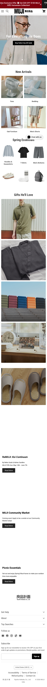
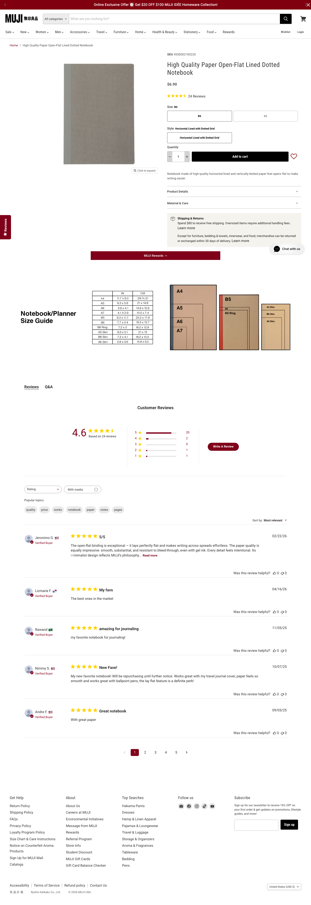
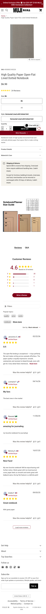

No-brand quality goods
Product utility should matter more than decorative branding.
This page gathers public MUJI references and turns them into a practical redesign guide for the Open Commerce storefront. The goal is a product-first, quiet, utilitarian store experience.
Boundary: do not copy MUJI logos, proprietary imagery, exact copy, or trade dress one-to-one. Translate the observed principles into an original store identity.
Product utility should matter more than decorative branding.
Quiet, rational, ordinary, practical, confident, and not hype-driven.
14px.26px to 30px.0px to 3px.1200px.20px.Dense category navigation with Sale, New, Women, Men, Accessories, Travel, Furniture, Home, Health & Beauty, Stationery, Food, and Rewards.
Header includes cart, wishlist, login/account, and search/category access.
Promo hero carousel, New Arrivals, seasonal essentials, gift modules, editorial/news cards, and a practical footer.
Collection banner, category modules, square product grid, price, title, short description, full-details link, and quick-shop action.
Breadcrumb, gallery, SKU, title, price, reviews, variants, quantity, add to cart, notices, details, material/care, shipping/returns, reviews, and Q&A.
Click any image card to open the full-resolution screenshot.





The detailed implementation planning now lives in separate HTML files. Each page spec compares our current design with the closest MUJI reference, lists differences, and maps component requirements to cropped reference images.
Route map, crop asset library, and implementation rules.
Header, promo bar, category navigation, search, account/cart actions, and footer.
Hero promo, category rail, seasonal rows, editorial tiles, and product cards.
Collection header, category tiles, filter/sort, product grid, and loading states.
Gallery, purchase panel, variant controls, quantity stepper, details, and reviews.
Cart rows, checkout forms, order summary, coupon, and payment state panels.
Login, register, account dashboard, order list, order detail, and access states.
Operational shell, module nav, KPI bar, data tables, forms, and media picker.
This maps our current pages to the closest MUJI screenshot reference and names the exact redesign work for each route. Routes without a direct MUJI screenshot should inherit the same shell, form, table, and summary patterns from the captured references.
| Our page | Reference screenshot | Change into | Current pieces | Remove or replace | Missing pieces |
|---|---|---|---|---|---|
src/routes/__root.tsx
|
Homepage desktop, Homepage mobile | Compact retail shell: promo bar, logo/name, category nav, search, account/cart actions, practical footer columns. |
RootComponent, SiteFooter,
AuthStatus, ToastProvider,
three-link nav.
|
Large MUSE wordmark footer, black editorial band, oversized display type, narrow three-link nav only. |
PromoBar, StoreHeader,
CategoryNav, SearchBox,
FooterLinkColumns, NewsletterSignup.
|
src/routes/index.tsx
|
Homepage desktop, Homepage mobile | Homepage becomes a sequence of commerce modules: hero promo, New Arrivals, seasonal essentials, gift/editorial tiles, and news cards. |
Live getHome data, announcement, hero image,
homepage banners, featured product grid, inline
ProductCard, MetaRow.
|
Asymmetric hero/meta column, "limited runs" brand manifesto, price tag overlay, dark about band. |
HomeHeroPromo, CategoryTileGrid,
SeasonalProductStrip, EditorialTile,
shared StorefrontProductCard.
|
src/routes/products/index.tsx
|
Collection desktop, Collection mobile | Product listing becomes a quiet collection page with category tiles, optional collection banner, filter/sort strip, square cards, and practical product labels. |
Live listProducts, category chips,
product-grid, duplicated product-card markup,
StatusBadge.
|
Current catalog-heading scale, uppercase chip row
as the main category experience, price chip pinned over image.
|
CollectionHeader, CategoryTile,
FilterSortBar, ProductGridSkeleton,
shared StorefrontProductCard.
|
src/routes/products/$slug.tsx
|
Product desktop, Product mobile | PDP becomes gallery left / purchase panel right on desktop, stacked on mobile, with SKU, review summary, variant buttons, quantity stepper, add-to-cart, and accordions. | Live product query, gallery URLs, variant selection, add-to-cart mutation, login-aware CTA, message/toast. | Select-only variant picker, oversized price summary block, generic "All products" link as primary breadcrumb. |
Breadcrumbs, ProductGallery,
ReviewSummary, VariantOptionGroup,
QuantityStepper, DetailAccordion.
|
src/routes/cart/route.tsx
|
Derived from Product desktop purchase panel and collection product rows. Direct cart reference still worth capturing. | Cart becomes table-like line items with square thumbnails, compact quantity stepper, remove action, availability notice, and a quiet order summary. |
Cart query, quantity update/remove mutations, validation
warnings, cart-item, cart-summary.
|
Current heavy four-column row on mobile, expressive cart heading copy, button styles inherited from Muse system. |
CartLineItem, QuantityStepper,
OrderSummary, AvailabilityNotice.
|
src/routes/checkout/route.tsx
|
Derived from product detail forms and footer/form styling. Direct checkout reference is not captured because checkout is behind cart/session state. | Checkout becomes compact form sections with restrained labels, white cards, thin borders, sticky order summary, coupon feedback, and clear payment CTA. |
Contact form, address selection, AddressFields,
coupon preview, CouponFeedback, order summary.
|
Large checkout cards, current high-contrast heading treatment, verbose explanatory copy. |
StorefrontFormSection, PublicTextField,
SavedAddressSelect, OrderSummary.
|
src/routes/payment/$orderNumber.tsx
|
Derived from product detail summary panel and account order summary needs. | Payment page becomes an order-status handoff with compact item rows, status badges, total summary, and one primary payment action. |
Payment query/action, StatusBadge,
cart-summary, currently uses
admin-panel for items.
|
Customer-facing use of admin-panel, large
catalog heading, mixed admin/storefront layout classes.
|
OrderStatusHeader, OrderLineList,
PaymentActionPanel.
|
src/routes/account/*
|
Derived from the same collection/product shell. Direct MUJI account/order reference not captured. | Account becomes a compact customer workspace: profile summary, order list cards/table, order detail with payment and delivery panels. | Account landing, order table, order detail, status badges, payment retry action. |
Customer-facing admin-table,
admin-panel, and stack-list
styling.
|
CustomerOrderTable, CustomerOrderCard,
DeliveryPanel, PaymentPanel.
|
src/routes/admin/*
|
Derived from the same MUSE shell and compact typography, with denser operational layouts. MUJI ecommerce screenshots inform restraint, not admin functionality. | Admin becomes a quiet operations workspace: compact header, module tabs, dense tables, small form fields, restrained KPI blocks, and practical media/product editors. |
AdminModulePage, adminModules,
Panel, TextField,
TextArea, MediaSelect,
MediaMultiSelect, admin tables/forms/KPIs.
|
Keep operational density, but remove the Muse editorial visual system: oversized headings, harsh black borders, display-font KPI treatment, and customer/admin class mixing. |
AdminShell, AdminPageHeader,
AdminDataTable, AdminFormSection,
AdminKpiBar, AdminMediaGrid.
|
src/routes/login, register,
setup
|
Derived from MUJI form/control styling in product detail and footer newsletter. | Auth/setup pages keep simple forms but adopt compact labels, thin borders, restrained buttons, and practical helper copy. |
auth-page, auth-form, form messages,
password auth actions.
|
Current expressive headings and high-contrast Muse button treatment. |
Shared PublicAuthForm styling only; no new
business logic required.
|
The current codebase has a small shared component layer and a lot of route-local storefront markup. The redesign should move repeated public-store UI into small reusable pieces. Admin should also be redesigned, but as a denser operations variant of the same MUSE system.
AuthStatus: keep session behavior; restyle links/buttons for compact header.ToastProvider and useToast: keep; restyle toast borders and actions.LoadingState: keep API; make skeleton match product-grid placeholders.AccessRequired and RouteError: keep; make them quieter content states.StatusBadge: keep labels/tone logic; restyle to small neutral status chips.AddressFields and CouponFeedback: keep logic; extract only if reuse grows.ProductCard markup in home and catalog.MetaRow and the current homepage meta column.about-band dark manifesto section..product-card small price-tag overlay..eyebrow::before decorative line and large negative-tracking headings.admin-table, admin-panel, and stack-list.StoreHeader, PromoBar, CategoryNav, SearchBox.StoreFooter, FooterLinkColumns, NewsletterSignup.StorefrontProductCard, ProductGrid, ProductGridSkeleton.CollectionHeader, CategoryTile, FilterSortBar.ProductGallery, VariantOptionGroup, QuantityStepper, DetailAccordion.OrderSummary, CartLineItem, CustomerOrderTable, PaymentPanel.AdminShell, AdminDataTable, AdminFormSection, AdminKpiBar.
Route files should keep data loading, mutation handlers, and
page-level composition only. Repeated UI belongs in shared
components so each route.tsx keeps focusing on one
thing.
Admin screens are included in the redesign. They should keep operational density and clear tables/forms, but use the same restrained MUSE tokens instead of the current editorial Muse styling. Customer pages should stop borrowing admin table/panel classes.
No Convex schema or checkout/payment logic needs to change for the first redesign pass. The work is presentation, shared components, and route composition.
npm run typecheck, npm run build, and Playwright desktop/mobile screenshot checks passed.Deferred product work: real search behavior, wishlist, customer reviews, address book management, and richer admin-managed collection modules.
#8a3a2d instead of MUJI red directly, with hover/dark accent #5f241b.{kind=link}
{kind=link}
{kind=link}
{kind=link}